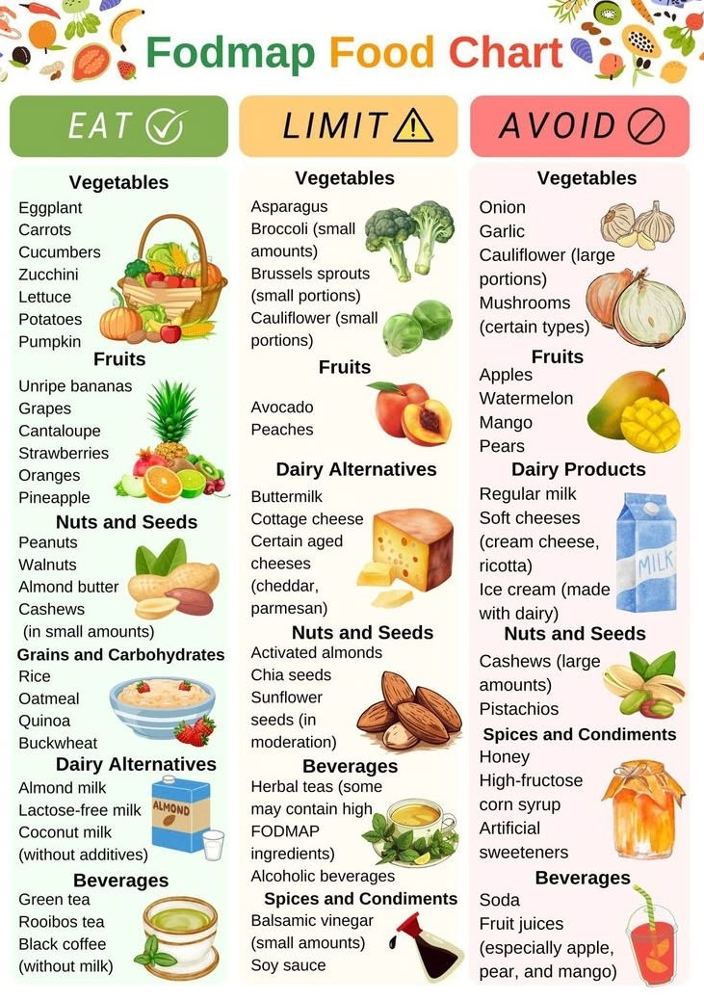

How you eat is the most important part of health and fitness. what you put in is what you get out. and remember food is fuel.
Here I included a list of healthy food options, so you know what to shop for next to you go grocery shopping. please mix and match based offo f your personal taste and accomdations. I have also inlcuded links to two toher websites that allow you to see what meals you can make with each item on the list. ive also included a list of low fod-map list which is for the people out there who struggle with bloating and digestive issues.
